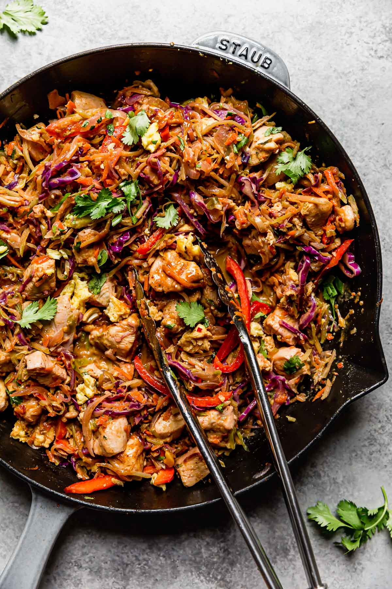

home
Noodle-Free Chicken Pad Thai-Inspired

Description
This is a meal I've made several times. It is full of vegetables and protein. I also went with this meal this week to use up the rest of that whole red cabbage I'm getting. The only negative is that it has eggs in it and eggs are a little $$$ these days.
This is what the author of the recipe had to say about it: We love authentic Pad Thai so we borrowed some of the ingredients from the popular dish that originated in Thailand to create our noodle-free version. While this recipe is far from a truly authentic Pad Thai like you’d find in Thailand or at a Thai restaurant, we know you’ll love it in its own ‘veggified’, noodle-free way. Replacing the noodles with strands of broccoli, cabbage and carrots greatly increases the vegetables in this dish and therefore makes it extra healthy with additional vitamins, minerals and fiber!
Ingredients
Skillet Ingredients
- 2 tsp. olive oil or avocado oil
- 3 eggs, whisked
- 1 – 1 1/4 lb. chicken breast, cubed into 1 inch pieces (may substitute chicken thighs)
- 1 (12 oz) bag broccoli slaw
- 1 ½ cup shredded red cabbage (may substitute green cabbage)
- 1 ½ cup shredded carrots
- 1 red bell pepper, seeded and sliced
- 1 small yellow onion (1 ½ cups, sliced)
- 6–8 green onion, thinly sliced white/light green parts divide with dark green parts
- 4–5 garlic cloves, minced
- 2 tsp. fresh ginger (may substitute 1/2 tsp. ground ginger*)
- Sea salt & black pepper to taste
Sauce Ingredients
- ¼ cup almond butter (drizzly creamy almond butter works best; may substitute creamy peanut butter)
- ¼ cup coconut aminos
- 3 Tbsp. lime juice
- 1/2 tsp. crushed red pepper
- 2 Tbsp. rice vinegar
- 1 Tbsp. toasted sesame oil
Topping Ingredients
- Chopped cilantro
- Dry roasted cashews
- Sliced green onion
- Lime wedges
- Sesame seeds
Instructions
- Place a large skillet (at least a 12-inch skillet) over medium heat. Add 1 teaspoon oil (if the skillet is not non-stick, you may need more oil). Once hot, add the whisked eggs and scramble. Remove from the skillet and set aside.
- To the skillet, add the additional 1 teaspoon oil as well as the cubed chicken. Sauté for about 2 minutes. Next add the remaining skillet ingredients, except for the dark green parts of green onion. The skillet will be very full until it cooks down. Continue to cook for 8-12 minutes carefully stirring occasionally.
- Meanwhile, combine the sauce ingredients and whisk until well combined and smooth.
- Once the veggies are tender and cooked down and chicken is cooked through. Add the eggs back to the skillet, the dark green parts of green onion, and the sauce. Stir to combine and allow to cook for another 1-2 minutes or until heated through.
- Serve hot topped with cilantro, cashews, sesame seeds, and/or green onion plus a squeeze of fresh lime juice.
Source